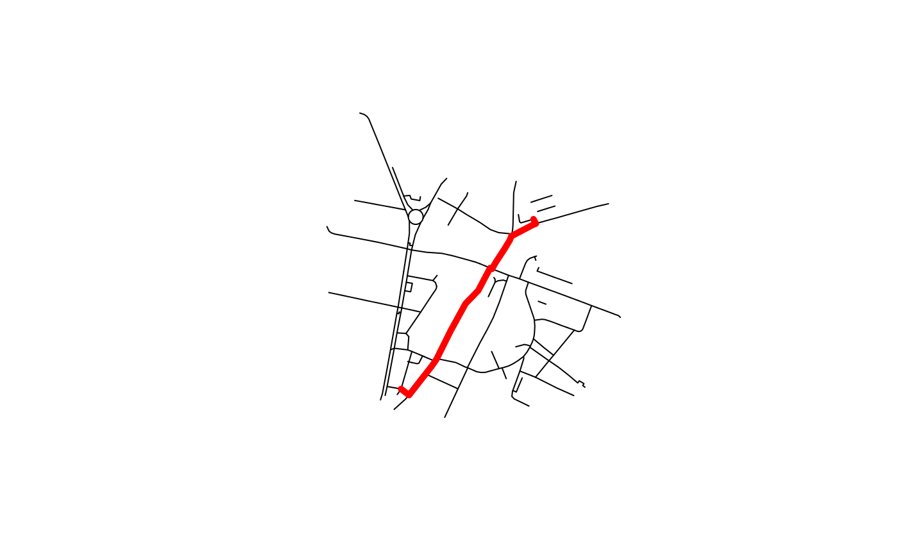

Example of OpenStreetMap road network
Route on local data using the dodgr package
route_dodgr(from = NULL, to = NULL, l = NULL, net = NULL)
| from | An object representing origins
(if lines are provided as the first argument, from is assigned to |
|---|---|
| to | An object representing destinations |
| l | Only needed if from and to are empty, in which case this should be a spatial object representing desire lines |
| net | sf object representing the route network |
An sf object
osm_net_example#> Simple feature collection with 71 features and 4 fields #> geometry type: LINESTRING #> dimension: XY #> bbox: xmin: -1.535904 ymin: 53.79979 xmax: -1.524435 ymax: 53.80682 #> epsg (SRID): 4326 #> proj4string: +proj=longlat +datum=WGS84 +no_defs #> First 10 features: #> highway name lanes maxspeed #> 5082947 tertiary Cross Stamford Street <NA> <NA> #> 6013279 trunk Sheepscar Street South 2 30 mph #> 6018346 tertiary <NA> 1 <NA> #> 6018347 tertiary Cross Stamford Street 2 <NA> #> 6072857 unclassified Mabgate <NA> 30 mph #> 6072858 residential Bell Street <NA> <NA> #> 6072859 unclassified Byron Street <NA> <NA> #> 6242167 tertiary Skinner Lane 1 <NA> #> 23091062 tertiary Cherry Row 2 30 mph #> 23091370 footway Hill Street <NA> <NA> #> geometry #> 5082947 LINESTRING (-1.531854 53.80... #> 6013279 LINESTRING (-1.532834 53.80... #> 6018346 LINESTRING (-1.532293 53.80... #> 6018347 LINESTRING (-1.531854 53.80... #> 6072857 LINESTRING (-1.533278 53.79... #> 6072858 LINESTRING (-1.532694 53.80... #> 6072859 LINESTRING (-1.532978 53.80... #> 6242167 LINESTRING (-1.532765 53.80... #> 23091062 LINESTRING (-1.529449 53.80... #> 23091370 LINESTRING (-1.527111 53.80...# from <- matrix(stplanr::geo_code("pedallers arms leeds"), ncol = 2) from <- matrix(c(-1.5327711, 53.8006988), ncol = 2) # to <- matrix(stplanr::geo_code("gzing"), ncol = 2) to <- matrix(c(-1.527937, 53.8044309), ncol = 2) pts <- rbind(from, to) colnames(pts) = c("X", "Y") # net <- dodgr::dodgr_streetnet(pts = pts, expand = 0.1) # osm_net_example <- net[c("highway", "name", "lanes", "maxspeed")] r <- route_dodgr(from, to, net = osm_net_example)#>#>#> Warning: ignoring all but the first attribute